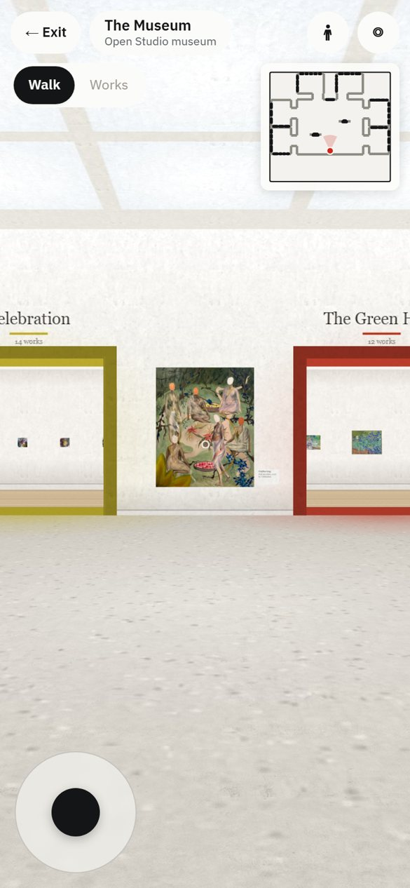
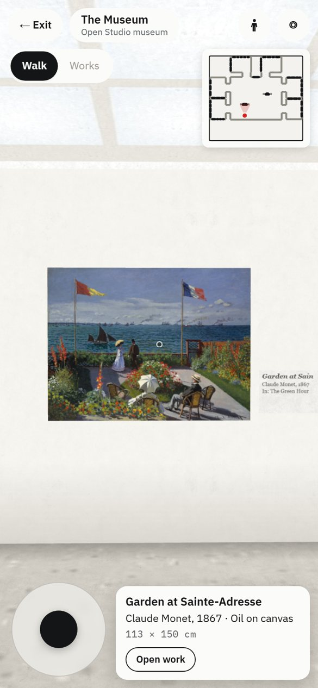
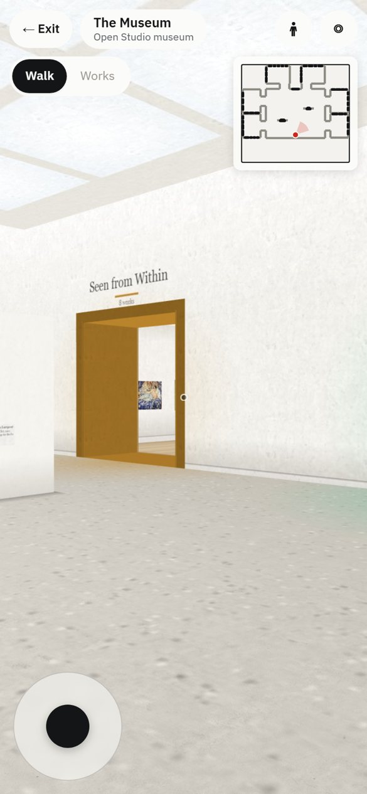
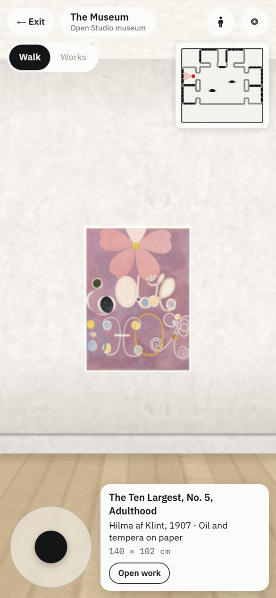

המוזיאון: אולם מרכזי במקום רחוב
שלוש תוכניות לבחירה. בכולן: אולם אחד קצר עם קוליסות ופדסטלים שנושאים עבודה יחידה, וממנו נכנסים לחללי התערוכות. שמונת החדרים של שולחן העבודה נשארים בדיוק כפי שהם, כך שהעריכה שלך לא משתנה.
היום: רחוב באורך 47 מטר וברוחב 7, ארבעה חדרים מכל צד. מי שנכנס רואה מסדרון, והחדר האחרון רחוק. בכל אחת מהתוכניות כאן המרחק הגדול ביותר מהכניסה לדלת קטן מחצי.
ממה לקחתי השראה
| קוליסות באולם פתוח | Neue Nationalgalerie, ברלין (מיס ון דר רוהה, 1968; שופץ בידי צ'יפרפילד, 2021): אולם זכוכית אחד, והתלייה על קירות עומדים חופשיים. MASP, סאו פאולו (לינה בו ברדי, 1968): כל ציור עומד לבדו באמצע האולם. |
|---|---|
| אולם שממנו נכנסים לגלריות | הרחבת Kunsthaus Zürich (דייוויד צ'יפרפילד, 2020): אולם מרכזי גבוה, והגלריות נפתחות ממנו. מוזיאון תל אביב, בניין הרטה ופול עמיר (פרסטון סקוט כהן, 2011): אטריום האור ("Lightfall") שסביבו הגלריות. Glenstone, מרילנד (תומס פייפר, 2018): חדרים נפרדים סביב חצר אחת. |
| מרכז עגול | Bourse de Commerce, פריז (טדאו אנדו, 2021): רוטונדה, והגלריות סביבה. מוזיאון המאה ה־21, קנזאווה (SANAA, 2004): בניין עגול שבו כל גלריה היא קופסה נפרדת. |
| סף צבעוני | נשאר מהרחוב שלך: לכל תערוכה סף בצבע שלה. באולם לבן הוא זה שמסמן את הדלתות מרחוק. |
מה תלוי באולם (בכל התוכניות)
עבודה אחת מכל תערוכה מוצגת (הראשונה שלה), כל אחת לבדה על קיר או על קוליסה, ולידה שלט עם שם התערוכה שממנה באה. פסל מתערוכה עומד על פדסטל באולם. כך האולם מתמלא לבד ממה שפרסמת, בלי עבודה נוספת בשולחן. אם תרצה לבחור בעצמך מה עומד באולם, אפשר להוסיף לשולחן "חדר תשיעי" לאולם; זה שלב נפרד.
1. החצר
אולם מלבני מואר מלמעלה, שתי דלתות בכל אחד מארבעת הצדדים. שקט, סימטרי, קל להתמצא.
| הכניסה | באמצע הצד הדרומי. מולך, על הקיר הצפוני, עבודה אחת גדולה בין שתי דלתות. |
|---|---|
| באולם | עד חמש עבודות יחידות: אחת על הקיר שמול הכניסה, ארבע על שתי קוליסות (שני הצדדים של כל אחת). עד שלושה פדסטלים. |
| חללים | 8. שניים מולך, שניים מכל צד, שניים לצד הכניסה. |
| מרחקים | מהכניסה לדלת הרחוקה ביותר: כ־16 מטר (ברחוב: 44). |
| בטלפון | שתי הדלתות שמולך והעבודה שביניהן נראות מיד. את השאר רואים בסיבוב לצדדים, והמפה הקטנה מראה את כולן. |
| עלות | נמוכה. הכל בזוויות ישרות, עם מה שכבר קיים. גרסת ניסיון עובדת עכשיו. נשאר: בדיקת הטלפון המלאה, ציור התוכנית החדשה בשולחן במקום הרחוב, וסרטון הכניסה. בערך יום עבודה. |




ללכת בו עכשיו: eladamsalem.com/open-studio/?hall#/museum (הרחוב נשאר ברירת המחדל לכל המבקרים; רק הקישור הזה פותח את החצר).
2. הרוטונדה
אולם בן שמונה צלעות, דלת בכל צלע. מגיעים אל האמצע, וכל הדלתות במרחק שווה.
| הכניסה | עולים במדרגות אל מרכז האולם, מתחת לעין האור. אין "קדימה": מסתובבים ובוחרים. |
|---|---|
| באולם | פסל אחד על פדסטל במרכז, וטבעת של ארבע קוליסות קצרות בין הדלתות: עד שמונה עבודות יחידות. |
| חללים | 8, אחד בכל צלע. |
| מרחקים | כל דלת במרחק 10 מטר מהמרכז. |
| בטלפון | הכי פשוט להבין: גוררים הצדה ועוברים מדלת לדלת. אבל אין מבט ראשון אחד שמראה את המוזיאון. |
| עלות | גבוהה. קירות וחדרים באלכסון: רצפות ותקרות שאינן מלבן, פתחים בקיר אלכסוני שהצופה עוד לא נבדק איתם, ותוכנית חדשה בשולחן. שלושה עד ארבעה ימים, עם סיכון. |
3. הביתן
אולם עמוק עם קיר זכוכית אל הגן מאחוריך, ושדה של קוליסות באמצע. האולם עצמו הוא התערוכה הראשית.
| הכניסה | דרך קיר הזכוכית. לפניך שדה של קוליסות מדורגות, ומאחוריהן שתי דלתות בקיר הרחוק. |
|---|---|
| באולם | הכי הרבה: ארבע קוליסות (שמונה עבודות יחידות) וחמישה פדסטלים. מתאים אם תרצה שהאולם יהיה תערוכה בפני עצמה. |
| חללים | 8. שלושה מכל צד, שניים בקצה. |
| מרחקים | מהכניסה לדלת הרחוקה: כ־24 מטר. הארוך מבין השלושה, ועדיין חצי מהרחוב. |
| בטלפון | הקוליסות מסתירות חלק מהדלתות; מגלים אותן תוך כדי הליכה. יפה, אבל פחות ברור. |
| עלות | בינונית. הקירות והחדרים כמו בחצר; הזכוכית והגן קיימים בחדרי האמנים, וצריך לחבר אותם למוזיאון ולבדוק עומק ומהירות. בערך יומיים. |
השוואה קצרה
| החצר | הרוטונדה | הביתן | |
|---|---|---|---|
| הדלת הרחוקה | 16 מ׳ | 10 מ׳ | 24 מ׳ |
| עבודות יחידות באולם | 5 + 3 פדסטלים | 8 + פדסטל | 8 + 5 פדסטלים |
| מבט ראשון בטלפון | ברור: עבודה ושתי דלתות | דלת אחת | קוליסות, דלתות מוסתרות |
| שינוי בשולחן העבודה | רק ציור התוכנית | רק ציור התוכנית | רק ציור התוכנית |
| עבודה לבנייה | כיום אחד (ניסיון כבר קיים) | 3 עד 4 ימים, עם סיכון | כיומיים |
ההמלצה: החצר. היא הקצרה והברורה ביותר בטלפון, נבנית ממה שכבר עובד, ואפשר ללכת בה כבר עכשיו. אם אחרי שתלך בה תרצה יותר אופי, אפשר לקחת מהביתן את קיר הזכוכית אל הגן לצד הכניסה של החצר.